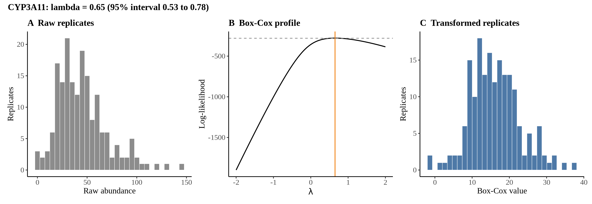
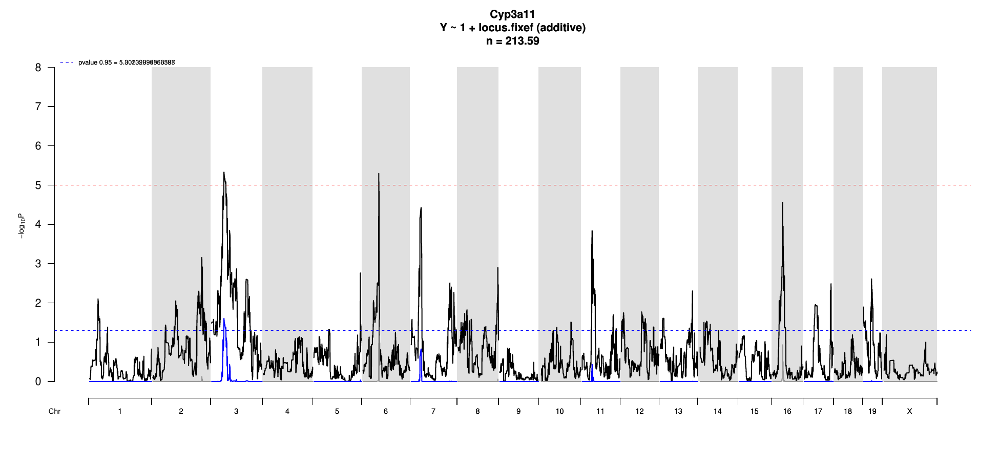
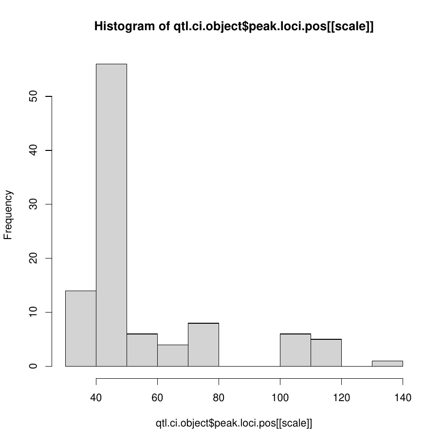
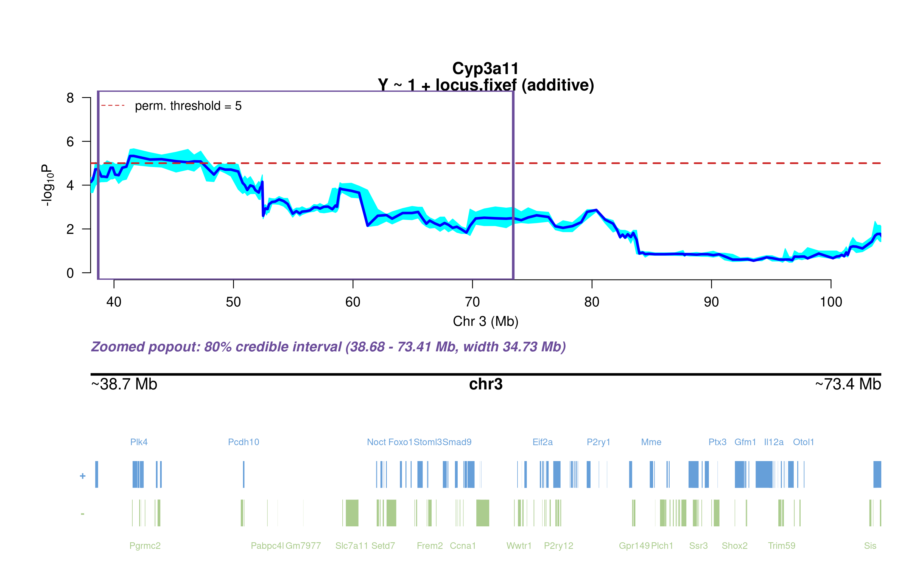
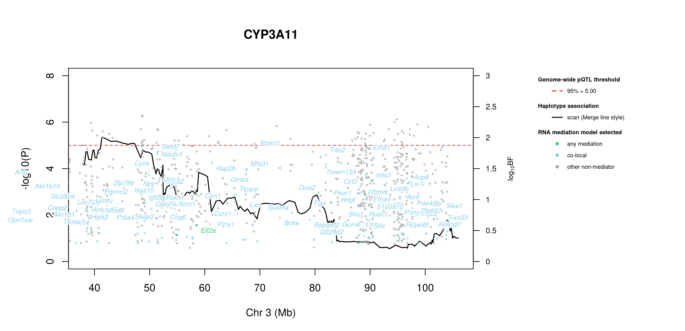
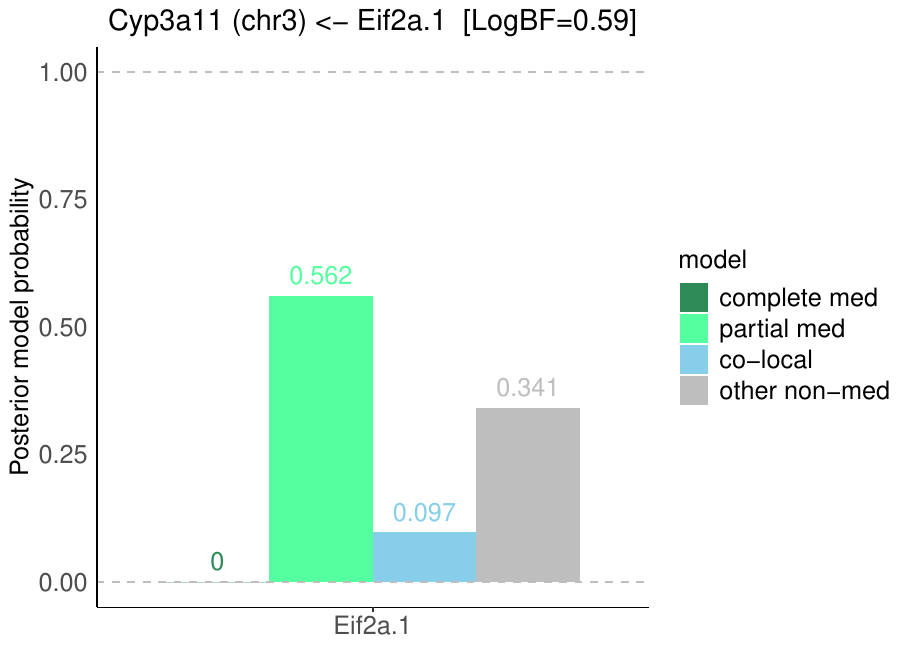
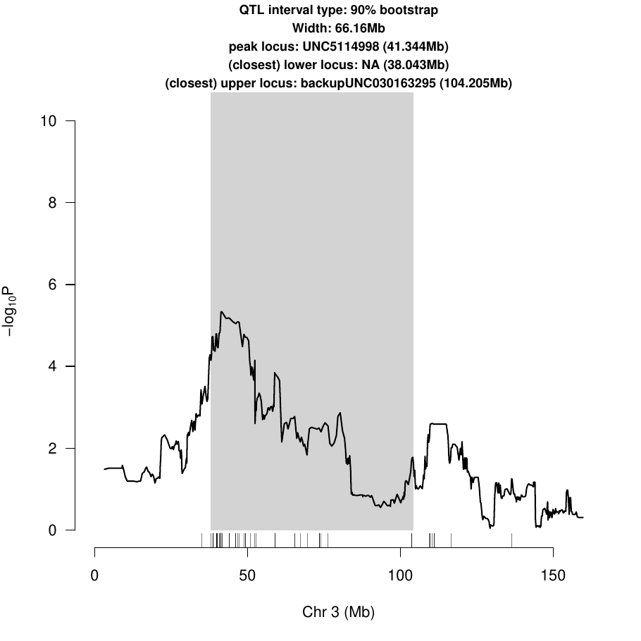
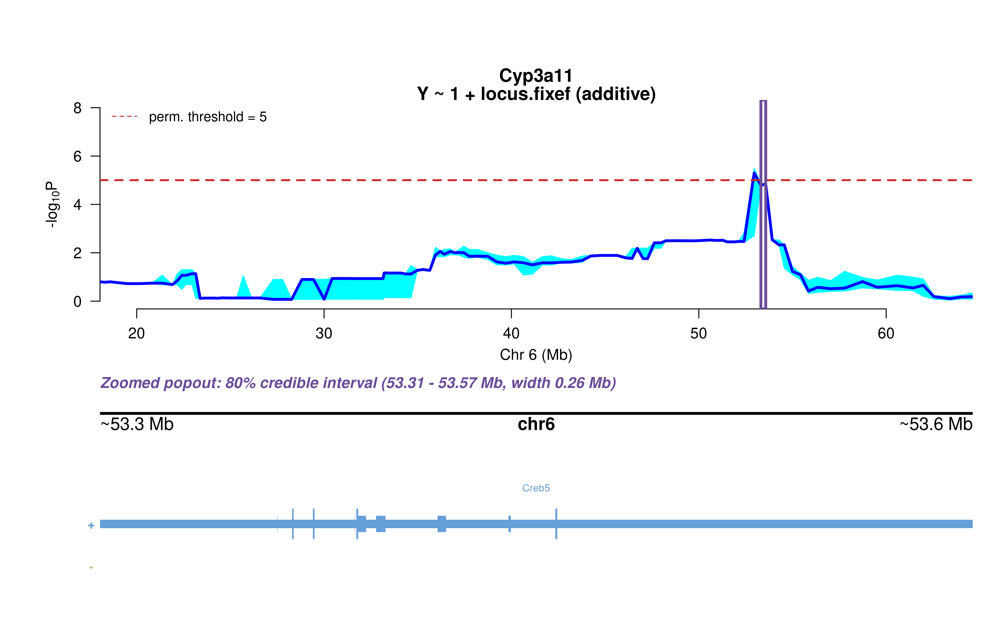
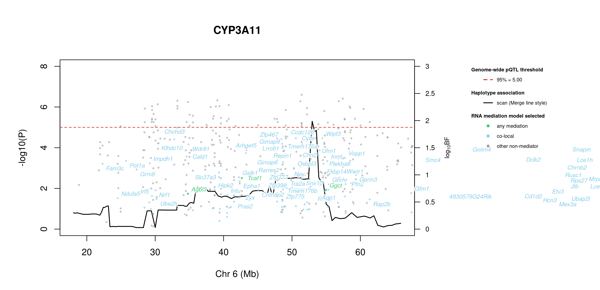
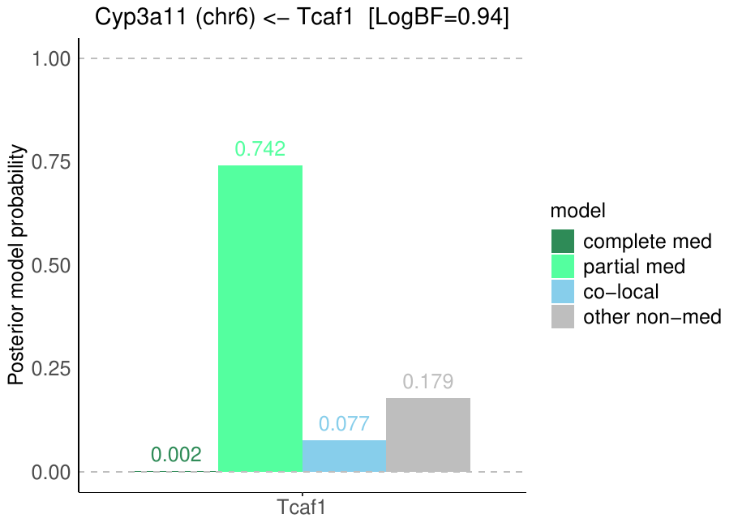

16 Cyp3a11
17 Protein Overview
The mouse protein Cyp3a11, also known as Cytochrome P450 3A11, is encoded by the gene Cyp3a11. It is involved in the metabolism of various drugs and xenobiotics. The protein has several aliases, including Cyp3a and Cytochrome P450 3A subfamily A.
18 Data and normalization
Replicate measurements were Box-Cox transformed with a protein-specific λ = 0.65 (95% likelihood interval 0.53 to 0.78), estimated on the individual replicates (boxcox(y ~ strain), no +1 shift). The strain phenotype is the mean of the transformed replicates and the strain noise used for the wisam weights is their variance.


18.1 Heritability
Broad-sense heritability of the protein is 0.60 (95% CI 0.44–0.71; BH-adjusted P 5.35e-18). Its paired transcript is Cyp3a11 (array probe 1416809_PM_at, paired from the measured peptide LYPIANR). Transcript H² is 0.20 (95% CI 0.03–0.34; BH-adjusted P 4.89e-03).
19 pQTL genome scan
Genome scan of the Box-Cox phenotype with wisam weights (miqtl scan.h2lmm, 11 imputations); significance thresholds come from 1000 permutations (GEV fit to the permutation maxima of −log10 P). Strongest locus: chr3:41.34 Mb, P = 4.65e-06, adjusted P = 2.48e-02; 95% threshold = 5.00 (−log10 P).

20 Significant peak(s)
20.1 Chromosome 3 peak (UNC5114998)
| Peak position | −log10(P) | Adjusted P | 90% credible interval | Encoding gene | Gene location | pQTL type |
|---|---|---|---|---|---|---|
| chr3:41.34 Mb | 5.33 | 2.48e-02 | 38.04–104.21 Mb | Cyp3a11 | chr5:145.85–145.88 Mb | trans |
A pQTL is cis when the gene encoding the protein lies within the credible interval and trans otherwise.

Download: PDF

Download: PNG

20.1.1 Merge / diplotype fine-mapping

Download: PNG
The top allelic series (SDP) from Merge is added to the book once the follow-up summary has been generated.
20.1.2 TIMBR allelic series

Download: JPG

Download: JPG
The highest-posterior TIMBR allelic series at the peak splits the founders into allele 0: A/J, C57BL/6J, 129S1/SvImJ, WSB/EiJ; allele 1: NOD/ShiLtJ, NZO/HlLtJ, CAST/EiJ, PWK/PhJ. That is 2 functional alleles: founders in the same group are inferred to carry the same functional allele at this locus.
Number of functional alleles. At the lead locus (UNC5114998, 41.34 Mb) the posterior probability of a bi-allelic series (two functional alleles) is 0.30, tri-allelic 0.39, and four or more alleles 0.31; a single allele (no QTL effect) has probability 0.00. For comparison, the Chinese-restaurant-process prior gives 0.50 / 0.29 / 0.14 for one / two / three alleles, so the data move weight away from a single allele. The locus in the credible interval whose single best allelic series has the highest posterior probability is UNC030147562 (94.22 Mb; series 0,0,0,0,0,0,0,0, P = 0.70); there bi-allelic = 0.20, tri-allelic = 0.07, four or more = 0.03.


20.1.3 RNA mediation



467 candidate transcripts lie in the credible interval. 52 have a best-model log10 Bayes factor ≥ 0.5 with mediation or co-local as the best-supported model and are labelled in the figure (377 more reach 0.5 only for the non-mediator model and are not labelled): co-local (52): Efna1 (1.84), Setd7 (1.78), Tdo2 (1.72), Ndufc1 (1.65), Tmem154 (1.59), Rap2b (1.59), Cycs (1.51), Mfsd1 (1.50), Npy (1.40), Arf5 (1.36), Lix1l (1.34), Ints3 (1.31) …. Mediation means the transcript is best explained as lying on the path from the QTL to the protein; co-local means it shares the QTL without mediating; log10 BF is the evidence for the best-supported model against the null.
Function text is the UniProt (mouse) annotation retrieved on 2026-10-03; reviewed Swiss-Prot entries where available. A dash means UniProt holds no functional annotation for that symbol.
| Transcript | Best model | log10 BF | UniProt protein | Function (UniProt) |
|---|---|---|---|---|
| Efna1 | co-local | 1.84 | Ephrin-A1 | Cell surface GPI-bound ligand for Eph receptors, a family of receptor tyrosine kinases which are crucial for migration, repulsion and adhesion during neuronal, vascular and epithelial development. Binds promiscuously Eph receptors residing on adjacent cells, leading to contact-dependent bidirectional signaling into neighboring cells. |
| Setd7 | co-local | 1.78 | Histone-lysine N-methyltransferase SETD7 | Histone methyltransferase that specifically monomethylates ‘Lys-4’ of histone H3. H3 ‘Lys-4’ methylation represents a specific tag for epigenetic transcriptional activation. Plays a central role in the transcriptional activation of genes such as collagenase or insulin. Recruited by IPF1/PDX-1 to the insulin promoter, leading to activate transcription. |
| Tdo2 | co-local | 1.72 | Tryptophan 2,3-dioxygenase | Heme-dependent dioxygenase that catalyzes the oxidative cleavage of the L-tryptophan (L-Trp) pyrrole ring and converts L-tryptophan to N-formyl-L-kynurenine. Catalyzes the oxidative cleavage of the indole moiety |
| Ndufc1 | co-local | 1.65 | NADH dehydrogenase [ubiquinone] 1 subunit C1, mitochondrial | Accessory subunit of the mitochondrial membrane respiratory chain NADH dehydrogenase (Complex I), that is believed not to be involved in catalysis. Complex I functions in the transfer of electrons from NADH to the respiratory chain. The immediate electron acceptor for the enzyme is believed to be ubiquinone |
| Tmem154 | co-local | 1.59 | Transmembrane protein 154 | — |
| Rap2b | co-local | 1.59 | Ras-related protein Rap-2b | Small GTP-binding protein which cycles between a GDP-bound inactive and a GTP-bound active form. Involved in EGFR and CHRM3 signaling pathways through stimulation of PLCE1. May play a role in cytoskeletal rearrangements and regulate cell spreading through activation of the effector TNIK. May regulate membrane vesiculation in red blood cells |
| Cycs | co-local | 1.51 | Cytochrome c, somatic | Electron carrier protein. The oxidized form of the cytochrome c heme group can accept an electron from the heme group of the cytochrome c1 subunit of cytochrome reductase. Cytochrome c then transfers this electron to the cytochrome oxidase complex, the final protein carrier in the mitochondrial electron-transport chain |
| Mfsd1 | co-local | 1.50 | Lysosomal dipeptide transporter MFSD1 | Lysosomal dipeptide uniporter that selectively exports lysine, arginine or histidine-containing dipeptides with a net positive charge from the lysosome lumen into the cytosol. Could play a role in a specific type of protein O-glycosylation indirectly regulating macrophages migration and tissue invasion. Also essential for liver homeostasis |
| Npy | co-local | 1.40 | Pro-neuropeptide Y | Ligand for neuropeptide Y receptor type 1 (NPY1R) and neuropeptide Y receptor type 2 (NPY2R). Receptor binding induces adenylate cyclase-inhibiting G protein-coupled receptor signaling, resulting in inhibition of cAMP production. Receptor activation by NPY also leads to an increase of intracellular Ca(2+) levels. |
| Arf5 | co-local | 1.36 | ADP-ribosylation factor 5 | GTP-binding protein involved in protein trafficking. Contributes to vesicle budding and uncoating at the Golgi apparatus. Regulates mTORC1 activity at the plasma membrane by promoting its recruitment to membrane ruffles, facilitating activation via the PI3K/Akt signaling pathway. |
| Lix1l | co-local | 1.34 | LIX1-like protein | — |
| Ints3 | co-local | 1.31 | Integrator complex subunit 3 | Component of the integrator complex, a multiprotein complex that terminates RNA polymerase II (Pol II) transcription in the promoter-proximal region of genes. |
| Akr1b10 | co-local | 1.30 | aldose reductase | — |
| Mgst2 | co-local | 1.30 | Microsomal glutathione S-transferase 2 | Catalyzes several different glutathione-dependent reactions. Catalyzes the glutathione-dependent reduction of lipid hydroperoxides, such as 5-HPETE. Has glutathione transferase activity, toward xenobiotic electrophiles, such as 1-chloro-2, 4-dinitrobenzene (CDNB). Also catalyzes the conjugation of leukotriene A4 with reduced glutathione to form leukotriene C4 (LTC4). |
| Acp6 | co-local | 1.28 | Lysophosphatidic acid phosphatase type 6 | Hydrolyzes lysophosphatidic acid (LPA) containing a medium length fatty acid chain to the corresponding monoacylglycerol. Has highest activity with lysophosphatidic acid containing myristate (C14:0), monounsaturated oleate (C18:1) or palmitate (C16:0), and lower activity with C18:0 and C6:0 lysophosphatidic acid |
| Lce3b | co-local | 1.26 | Late cornified envelope 3B | — |
| Gmps | co-local | 1.24 | GMP synthase [glutamine-hydrolyzing] | Catalyzes the conversion of xanthine monophosphate (XMP) to GMP in the presence of glutamine and ATP through an adenyl-XMP intermediate |
| Zfp786 | co-local | 1.18 | Zinc finger protein 786 | May be involved in transcriptional regulation |
| Ufm1 | co-local | 1.18 | Ubiquitin-fold modifier 1 | Ubiquitin-like modifier which can be covalently attached via an isopeptide bond to lysine residues of substrate proteins as a monomer or a lysine-linked polymer. The so-called ufmylation, requires the UFM1-activating E1 enzyme UBA5, the UFM1-conjugating E2 enzyme UFC1, and the UFM1-ligase E3 enzyme UFL1. |
| Paqr6 | co-local | 1.11 | Membrane progestin receptor delta | Plasma membrane progesterone (P4) receptor coupled to G proteins. Seems to act through a G(s) mediated pathway. Involved in neurosteroid inhibition of apoptosis. May be involved in regulating rapid P4 signaling in the nervous system. Also binds dehydroepiandrosterone (DHEA), pregnanolone, pregnenolone and allopregnanolone |
| Gria2 | co-local | 1.11 | Glutamate receptor 2 | Ionotropic glutamate receptor that functions as a ligand-gated cation channel, gated by L-glutamate and glutamatergic agonists such as alpha-amino-3-hydroxy-5-methyl-4-isoxazolepropionic acid (AMPA), quisqualic acid, and kainic acid. |
| Tiparp | co-local | 1.09 | Protein mono-ADP-ribosyltransferase TIPARP | ADP-ribosyltransferase that mediates mono-ADP-ribosylation of glutamate, aspartate and cysteine residues on target proteins. Acts as a negative regulator of AHR by mediating mono-ADP-ribosylation of AHR, leading to inhibit transcription activator activity of AHR (Probable) |
| Naa15 | co-local | 1.07 | N-alpha-acetyltransferase 15, NatA auxiliary subunit | Auxillary subunit of N-terminal acetyltransferase complexes which display alpha (N-terminal) acetyltransferase (NAT) activity. The NAT activity may be important for vascular, hematopoietic and neuronal growth and development. Required to control retinal neovascularization in adult ocular endothelial cells. |
| Clrn1 | co-local | 1.06 | Clarin-1 | May have a role in the excitatory ribbon synapse junctions between hair cells and cochlear ganglion cells and presumably also in analogous synapses within the retina |
| Pgrmc2 | co-local | 1.05 | Membrane-associated progesterone receptor component 2 | Required for the maintenance of uterine histoarchitecture and normal female reproductive lifespan. May serve as a universal non-classical progesterone receptor in the uterus (Probable). Intracellular heme chaperone required for delivery of labile, or signaling heme, to the nucleus. Plays a role in adipocyte function and systemic glucose homeostasis. |
| Arnt | co-local | 1.04 | Aryl hydrocarbon receptor nuclear translocator | Transcription factor that functions as an obligate heterodimerization partner for several basic helix-loop-helix PER-ARNT-SIM (bHLH-PAS) proteins. Forms heterodimers with the aryl hydrocarbon receptor (AHR) to mediate the transcriptional response to xenobiotics by binding xenobiotic response elements (XREs) or dioxin response elements (DREs) in target gene promoters. |
| Pmvk | co-local | 1.04 | Phosphomevalonate kinase | Catalyzes the reversible ATP-dependent phosphorylation of mevalonate 5-phosphate to produce mevalonate diphosphate and ADP, a key step in the mevalonic acid mediated biosynthesis of isopentenyl diphosphate and other polyisoprenoid metabolites |
| Tax1bp1 | co-local | 1.02 | Tax1-binding protein 1 homolog | Ubiquitin-binding adapter that participates in inflammatory, antiviral and innate immune processes as well as selective autophagy regulation. Plays a key role in the negative regulation of NF-kappa-B and IRF3 signalings by acting as an adapter for the ubiquitin-editing enzyme A20/TNFAIP3 to bind and inactivate its substrates. |
| Efna4 | co-local | 1.01 | Ephrin-A4 | Cell surface GPI-bound ligand for Eph receptors, a family of receptor tyrosine kinases which are crucial for migration, repulsion and adhesion during neuronal, vascular and epithelial development. Binds promiscuously Eph receptors residing on adjacent cells, leading to contact-dependent bidirectional signaling into neighboring cells. |
| Lxn | co-local | 1.00 | Latexin | Hardly reversible, non-competitive, and potent inhibitor of CPA1, CPA2 and CPA4. May play a role in inflammation |
| Foxo1 | co-local | 0.95 | Forkhead box protein O1 | Transcription factor that is the main target of insulin signaling and regulates metabolic homeostasis in response to oxidative stress. Binds to the insulin response element (IRE) with consensus sequence 5’-TT[G/A]TTTTG-3’ and the related Daf-16 family binding element (DBE) with consensus sequence 5’-TT[G/A]TTTAC-3’. Activity suppressed by insulin. |
| Fga | co-local | 0.95 | Fibrinogen alpha chain | Cleaved by the protease thrombin to yield monomers which, together with fibrinogen beta (FGB) and fibrinogen gamma (FGG), polymerize to form an insoluble fibrin matrix. Fibrin has a major function in hemostasis as one of the primary components of blood clots. |
| Intu | co-local | 0.90 | Protein inturned | Plays a key role in ciliogenesis and embryonic development. Regulator of cilia formation by controlling the organization of the apical actin cytoskeleton and the positioning of the basal bodies at the apical cell surface, which in turn is essential for the normal orientation of elongating ciliary microtubules. |
| Ankrd50 | co-local | 0.84 | Ankyrin repeat domain 50 | — |
| Mfsd8 | co-local | 0.83 | Major facilitator superfamily domain-containing protein 8 | Outward-rectifying chloride channel involved in endolysosomal chloride homeostasis, membrane fusion and function. Conducts chloride currents up to hundreds of picoamperes. Regulates lysosomal calcium content by reducing the lysosomal membrane potential, thereby activating TRPML1 channel and further release of lysosomal calcium ions. |
| Tnpo3 | co-local | 0.81 | Transportin-3 | Importin, which transports target proteins into the nucleus. Specifically mediates the nuclear import of splicing factor serine/arginine (SR) proteins, such as RBM4, SFRS1 and SFRS2, by recognizing phosphorylated SR domains. Also mediates the nuclear import of serine/arginine (SR) protein CPSF6, independently of CPSF6 phosphorylation. |
| Cog6 | co-local | 0.80 | Conserved oligomeric Golgi complex subunit 6 | Required for normal Golgi function |
| Copg2 | co-local | 0.79 | Coatomer subunit gamma-2 | The coatomer is a cytosolic protein complex that binds to dilysine motifs and reversibly associates with Golgi non-clathrin-coated vesicles, which further mediate biosynthetic protein transport from the ER, via the Golgi up to the trans Golgi network. |
| Ccnl1 | co-local | 0.77 | Cyclin-L1 | Regulatory component of the cyclin-L-CDK11 complex that regulates transcription and pre-mRNA splicing. Inhibited by the CDK-specific inhibitor CDKN1A/p21 |
| Akr1d1 | co-local | 0.76 | Aldo-keto reductase family 1 member D1 | Catalyzes the stereospecific NADPH-dependent reduction of the C4-C5 double bond of bile acid intermediates and steroid hormones carrying a delta(4)-3-one structure to yield an A/B cis-ring junction. This cis-configuration is crucial for bile acid biosynthesis and plays important roles in steroid metabolism. |
| S100a10 | co-local | 0.74 | Protein S100-A10 | Because S100A10 induces the dimerization of ANXA2/p36, it may function as a regulator of protein phosphorylation in that the ANXA2 monomer is the preferred target (in vitro) of tyrosine-specific kinase |
| Zfp697 | co-local | 0.74 | Zinc finger protein 697 | RNA-interacting protein with a high number of miRNA targets. Acts as a damage-induced regulator of muscle remodeling by mediating the interferon gamma response in muscle cells |
| Tbxas1 | co-local | 0.73 | Thromboxane-A synthase | Catalyzes the conversion of prostaglandin H2 (PGH2) to thromboxane A2 (TXA2), a potent inducer of blood vessel constriction and platelet aggregation. Also cleaves PGH2 to 12-hydroxy-heptadecatrienoicacid (12-HHT) and malondialdehyde, which is known to act as a mediator of DNA damage. 12-HHT and malondialdehyde are formed stoichiometrically in the same amounts as TXA2. |
| Vangl1 | co-local | 0.69 | Vang-like protein 1 | — |
| Rapgef2 | co-local | 0.68 | Rap guanine nucleotide exchange factor 2 | Functions as a guanine nucleotide exchange factor (GEF), which activates Rap and Ras family of small GTPases by exchanging bound GDP for free GTP in a cAMP-dependent manner. Serves as a link between cell surface receptors and Rap/Ras GTPases in intracellular signaling cascades. |
| She | co-local | 0.66 | SH2 domain-containing adapter protein E | — |
| Pdia4 | co-local | 0.63 | Protein disulfide-isomerase A4 | — |
| P2ry1 | co-local | 0.60 | P2Y purinoceptor 1 | Receptor for extracellular adenine nucleotides such as ADP. In platelets, binding to ADP leads to mobilization of intracellular calcium ions via activation of phospholipase C, a change in platelet shape, and ultimately platelet aggregation |
| Vps45 | co-local | 0.59 | Vacuolar protein sorting-associated protein 45 | May play a role in vesicle-mediated protein trafficking from the Golgi stack through the trans-Golgi network |
| Opn1sw | co-local | 0.59 | Short-wave-sensitive opsin 1 | G protein-coupled photoreceptor that selectively activates transducin G alpha protein (G(t)) in response to short-wavelength (blue-violet) light, thereby stimulating the G(t)/transducin protein pathway. This activation leads to increased cGMP phosphodiesterase activity, resulting in decreased intracellular cGMP and subsequent closure of cGMP-gated ion channels. |
| Glt28d2 | co-local | 0.56 | UDP-N-acetylglucosamine transferase subunit ALG13 | — |
| Gon4l | co-local | 0.52 | GON-4-like protein | Acts as a key transcription regulator of histones. Activates transcription of the histone H2A, histone H2B, histone H3 and histone H4 genes in conjunction with GON4L and MIZF. Together with CRAMP1, binds to the promoters of H1 genes (H1-2, H1-3, H1-4, H1-5 and H1-10/H1x), driving their transcription. |

Download: PDF
20.2 Chromosome 6 peak (UNC11092470)
| Peak position | −log10(P) | Adjusted P | 90% credible interval | Encoding gene | Gene location | pQTL type |
|---|---|---|---|---|---|---|
| chr6:52.95 Mb | 5.30 | 2.67e-02 | 18.04–64.62 Mb | Cyp3a11 | chr5:145.85–145.88 Mb | trans |
A pQTL is cis when the gene encoding the protein lies within the credible interval and trans otherwise.

Download: PDF

Download: PNG

20.2.1 Merge / diplotype fine-mapping

Download: PNG
The top allelic series (SDP) from Merge is added to the book once the follow-up summary has been generated.
20.2.2 TIMBR allelic series

Download: JPG

Download: JPG
The highest-posterior TIMBR allelic series at the peak splits the founders into allele 1: C57BL/6J, 129S1/SvImJ, NOD/ShiLtJ, NZO/HlLtJ, CAST/EiJ, PWK/PhJ, WSB/EiJ; allele 0: A/J. That is 2 functional alleles: founders in the same group are inferred to carry the same functional allele at this locus.
Number of functional alleles. At the lead locus (UNC11092470, 52.95 Mb) the posterior probability of a bi-allelic series (two functional alleles) is 0.38, tri-allelic 0.39, and four or more alleles 0.23; a single allele (no QTL effect) has probability 0.00. For comparison, the Chinese-restaurant-process prior gives 0.50 / 0.29 / 0.14 for one / two / three alleles, so the data move weight away from a single allele. The locus in the credible interval whose single best allelic series has the highest posterior probability is JAX00605159 (24.54 Mb; series 0,0,0,0,0,0,0,0, P = 0.80); there bi-allelic = 0.14, tri-allelic = 0.04, four or more = 0.02.


20.2.3 RNA mediation



467 candidate transcripts lie in the credible interval. 48 have a best-model log10 Bayes factor ≥ 0.5 with mediation or co-local as the best-supported model and are labelled in the figure (394 more reach 0.5 only for the non-mediator model and are not labelled): mediation (1): Tcaf1 (0.94); co-local (47): Ccdc126 (1.70), Cycs (1.68), Wipf3 (1.67), Zfp467 (1.66), Chchd3 (1.65), Lrrc61 (1.57), Wdr91 (1.56), Snapin (1.55), Gimap9 (1.53), Repin1 (1.50), Chn2 (1.45), Arhgef5 (1.40) …. Mediation means the transcript is best explained as lying on the path from the QTL to the protein; co-local means it shares the QTL without mediating; log10 BF is the evidence for the best-supported model against the null.
Function text is the UniProt (mouse) annotation retrieved on 2026-10-03; reviewed Swiss-Prot entries where available. A dash means UniProt holds no functional annotation for that symbol.
| Transcript | Best model | log10 BF | UniProt protein | Function (UniProt) |
|---|---|---|---|---|
| Tcaf1 | mediation | 0.94 | TRPM8 channel-associated factor 1 | Positively regulates the plasma membrane cation channel TRPM8 activity. Involved in the recruitment of TRPM8 to the cell surface. Promotes prostate cancer cell migration inhibition in a TRPM8-dependent manner |
| Ccdc126 | co-local | 1.70 | Coiled-coil domain-containing protein 126 | — |
| Cycs | co-local | 1.68 | Cytochrome c, somatic | Electron carrier protein. The oxidized form of the cytochrome c heme group can accept an electron from the heme group of the cytochrome c1 subunit of cytochrome reductase. Cytochrome c then transfers this electron to the cytochrome oxidase complex, the final protein carrier in the mitochondrial electron-transport chain |
| Wipf3 | co-local | 1.67 | WAS/WASL-interacting protein family member 3 | May be a regulator of cytoskeletal organization (Potential). May have a role in spermatogenesis |
| Zfp467 | co-local | 1.66 | Zinc finger protein 467 | Transcription factor that promotes adipocyte differentiation and suppresses osteoblast differentiation in the bone marrow. Enhances the osteoclast-supporting ability of stromal cells. Binds with STAT3 the consensus sequence 5’-CTTCTGGGAAGA-3’ of the acute phase response element (APRE). Transactivates several promoters including FOS, OSM and PPARG. |
| Chchd3 | co-local | 1.65 | MICOS complex subunit Mic19 | Component of the MICOS complex, a large protein complex of the mitochondrial inner membrane that plays crucial roles in the maintenance of crista junctions, inner membrane architecture, and formation of contact sites to the outer membrane. Has also been shown to function as a transcription factor which binds to the BAG1 promoter and represses BAG1 transcription. |
| Lrrc61 | co-local | 1.57 | Leucine-rich repeat-containing protein 61 | — |
| Wdr91 | co-local | 1.56 | WD repeat-containing protein 91 | Functions as a negative regulator of the PI3 kinase/PI3K activity associated with endosomal membranes via BECN1, a core subunit of the PI3K complex. By modifying the phosphatidylinositol 3-phosphate/PtdInsP3 content of endosomal membranes may regulate endosome fusion, recycling, sorting and early to late endosome transport. |
| Snapin | co-local | 1.55 | SNARE-associated protein Snapin | Component of the BLOC-1 complex, a complex that is required for normal biogenesis of lysosome-related organelles (LRO), such as platelet dense granules and melanosomes. In concert with the AP-3 complex, the BLOC-1 complex is required to target membrane protein cargos into vesicles assembled at cell bodies for delivery into neurites and nerve terminals. |
| Gimap9 | co-local | 1.53 | AIG1-type G domain-containing protein | — |
| Repin1 | co-local | 1.50 | DNA-binding protein REPIN1 | Sequence-specific double-stranded DNA-binding protein. Binds ATT-rich and T-rich DNA sequences and facilitates DNA bending. May regulate the expression of genes involved in cellular fatty acid import, including SCARB1/CD36, and genes involved in lipid droplet formation. May regulate the expression of LCN2, and thereby influence iron metabolism and apoptosis-related pathways. |
| Chn2 | co-local | 1.45 | Beta-chimaerin | GTPase-activating protein for p21-rac |
| Arhgef5 | co-local | 1.40 | Rho guanine nucleotide exchange factor 5 | Guanine nucleotide exchange factor which activates Rho GTPases. Strongly activates RHOA. Also strongly activates RHOB, weakly activates RHOC and RHOG and shows no effect on RHOD, RHOV, RHOQ or RAC1. Involved in regulation of cell shape and actin cytoskeletal organization. |
| Vopp1 | co-local | 1.31 | WW domain binding protein VOPP1 | Increases the transcriptional activity of NFKB1 by facilitating its nuclear translocation, DNA-binding and associated apoptotic response, when overexpressed. May sequester WWOX in lysosomal vesicles and thereby regulate WWOX role as tumor suppressor |
| Pot1a | co-local | 1.26 | Protection of telomeres protein 1 | Component of the telomerase ribonucleoprotein (RNP) complex that is essential for the replication of chromosome termini. Is a component of the double-stranded telomeric DNA-binding TRF1 complex which is involved in the regulation of telomere length by cis-inhibition of telomerase. |
| Inmt | co-local | 1.25 | Indolethylamine N-methyltransferase | Catalyzes the N-methylation of tryptamine and structurally related compounds. Functions as a thioether S-methyltransferase and is active with a variety of thioethers and the corresponding selenium and tellurium compounds, including 3-methylthiopropionaldehyde, dimethyl selenide, dimethyl telluride, 2-methylthioethylamine, 2-methylthioethanol, methyl-n-propyl sulfide and … |
| Gimap6 | co-local | 1.23 | GTPase, IMAP family member 6 | — |
| Impdh1 | co-local | 1.21 | Inosine-5’-monophosphate dehydrogenase 1 | Catalyzes the conversion of inosine 5’-phosphate (IMP) to xanthosine 5’-phosphate (XMP), the first committed and rate-limiting step in the de novo synthesis of guanine nucleotides, and therefore plays an important role in the regulation of cell growth. Could also have a single-stranded nucleic acid-binding activity and could play a role in RNA and/or DNA metabolism. |
| Plekha8 | co-local | 1.21 | Pleckstrin homology domain-containing family A member 8 | Mediates the non-vesicular transport of glucosylceramide (GlcCer) from the trans-Golgi network (TGN) to the plasma membrane, playing a pivotal role in the synthesis of complex glycosphingolipids; binding of both phosphatidylinositol 4-phosphate (PIP) and ARF1 are essential for this GlcCer transfer ability. |
| Lce1h | co-local | 1.13 | Uncharacterized protein | — |
| Osbpl3 | co-local | 1.12 | Oxysterol-binding protein-related protein 3 | Lipid transfer protein that mediates the non-vesicular transport of phosphoinositide 4-phosphate (1,2-diacyl-sn-glycero-3-phospho-(1D-myo-inositol 4-phosphate), or PI(4)P) at the plasma membrane (PM)/ endoplasmic reticulum (ER) contact sites. Extracts PI4P from the PM, in exchange for phosphatidylcholine. |
| Grm8 | co-local | 1.10 | Metabotropic glutamate receptor 8 | G protein-coupled receptor for glutamate. Ligand binding causes a conformation change that triggers signaling via guanine nucleotide-binding proteins (G proteins) and modulates the activity of down-stream effectors. Signaling inhibits adenylate cyclase activity |
| Mrpl9 | co-local | 1.07 | Large ribosomal subunit protein bL9m | — |
| Slc37a3 | co-local | 1.04 | Sugar phosphate exchanger 3 | Unlike the other SLC37 members, lacks glucose-6-phosphate antiporter activity. In osteoclasts, forms a transporter complex with ATRAID for nitrogen-containing-bisphosphonates (N-BPs) required for releasing N-BP molecules that have trafficked to lysosomes through fluid-phase endocytosis into the cytosol |
| Itga10 | co-local | 1.00 | Integrin, alpha 10 | — |
| Rarres2 | co-local | 1.00 | Retinoic acid receptor responder protein 2 | Adipocyte-secreted protein (adipokine) that regulates adipogenesis, metabolism and inflammation through activation of the chemokine-like receptor 1 (CMKLR1). Also acts as a ligand for CMKLR2. Can also bind to C-C chemokine receptor-like 2 (CCRL2), but with a lower affinity than it does to CMKLR1 or CMKLR2. |
| Gprin3 | co-local | 1.00 | — | — |
| Fkbp14 | co-local | 0.98 | Peptidyl-prolyl cis-trans isomerase FKBP14 | PPIase which accelerates the folding of proteins during protein synthesis. Has a preference for substrates containing 4-hydroxylproline modifications, including type III collagen. May also target type VI and type X collagens |
| Gstk1 | co-local | 0.96 | — | — |
| Snx10 | co-local | 0.93 | Sorting nexin-10 | Probable phosphoinositide-binding protein involved in protein sorting and membrane trafficking in endosomes. Plays a role in cilium biogenesis through regulation of the transport and the localization of proteins to the cilium. Required for the localization to the cilium of V-ATPase subunit ATP6V1D and ATP6V0D1, and RAB8A. |
| Npy | co-local | 0.93 | Pro-neuropeptide Y | Ligand for neuropeptide Y receptor type 1 (NPY1R) and neuropeptide Y receptor type 2 (NPY2R). Receptor binding induces adenylate cyclase-inhibiting G protein-coupled receptor signaling, resulting in inhibition of cAMP production. Receptor activation by NPY also leads to an increase of intracellular Ca(2+) levels. |
| Anp32e | co-local | 0.93 | Acidic leucine-rich nuclear phosphoprotein 32 family member E | Histone chaperone that specifically mediates the genome-wide removal of histone H2A.Z/H2AZ1 from the nucleosome: removes H2A.Z/H2AZ1 from its normal sites of deposition, especially from enhancer and insulator regions. Not involved in deposition of H2A.Z/H2AZ1 in the nucleosome. |
| Mllt11 | co-local | 0.90 | Protein AF1q | Cofactor for the transcription factor TCF7. Involved in regulation of lymphoid development by driving multipotent hematopoietic progenitor cells towards a T-cell fate |
| Epha1 | co-local | 0.88 | Ephrin type-A receptor 1 | Receptor tyrosine kinase which binds promiscuously membrane-bound ephrin-A family ligands residing on adjacent cells, leading to contact-dependent bidirectional signaling into neighboring cells. The signaling pathway downstream of the receptor is referred to as forward signaling while the signaling pathway downstream of the ephrin ligand is referred to as reverse signaling. |
| Jtb | co-local | 0.88 | Protein JTB | Required for normal cytokinesis during mitosis. Plays a role in the regulation of cell proliferation. May be a component of the chromosomal passenger complex (CPC), a complex that acts as a key regulator of mitosis. |
| Pfn2 | co-local | 0.83 | Profilin-2 | Binds to actin and affects the structure of the cytoskeleton. At high concentrations, profilin prevents the polymerization of actin, whereas it enhances it at low concentrations. By binding to PIP2, it inhibits the formation of IP3 and DG |
| Ghrhr | co-local | 0.82 | Growth hormone-releasing hormone receptor | Receptor for GRF, coupled to G proteins which activate adenylyl cyclase. Stimulates somatotroph cell growth, growth hormone gene transcription and growth hormone secretion |
| Zfp777 | co-local | 0.81 | — | — |
| Rps27 | co-local | 0.81 | Small ribosomal subunit protein eS27 | Component of the small ribosomal subunit. The ribosome is a large ribonucleoprotein complex responsible for the synthesis of proteins in the cell. Required for proper rRNA processing and maturation of 18S rRNAs. Part of the small subunit (SSU) processome, first precursor of the small eukaryotic ribosomal subunit. |
| Tmem176b | co-local | 0.79 | Transmembrane protein 176B | May play a role in the process of maturation of dendritic cells. Required for the development of cerebellar granule cells |
| Lce1i | co-local | 0.79 | Uncharacterized protein | — |
| Aqp1 | co-local | 0.73 | Aquaporin-1 | Forms a water channel that facilitates the transport of water across cell membranes, playing a crucial role in water homeostasis in various tissues. Could also be permeable to small solutes including hydrogen peroxide, glycerol and gases such as amonnia (NH3), nitric oxide (NO) and carbon dioxide (CO2). |
| Hcn3 | co-local | 0.62 | Potassium/sodium hyperpolarization-activated cyclic nucleotide-gated channel 3 | Hyperpolarization-activated ion channel that are permeable to sodium and potassium ions, with an about 3:1 preference for potassium ions. Contributes to the native pacemaker currents in heart (If) and in neurons (Ih). In particular, plays a pivotal role in maintaining excitability and promoting rhythmic burst firing within hypothalamic nuclei. |
| Adamtsl4 | co-local | 0.56 | ADAMTS-like protein 4 | Positive regulation of apoptosis. May facilitate FBN1 microfibril biogenesis |
| Mex3a | co-local | 0.54 | Mex3 RNA binding family member A | — |
| Cd1d2 | co-local | 0.52 | Antigen-presenting glycoprotein CD1d2 | Antigen-presenting protein that binds self and non-self glycolipids and presents them to T-cell receptors on natural killer T-cells |
| Zfp775 | co-local | 0.52 | Zinc finger protein 775 | May be involved in transcriptional regulation |
| 4930579G24Rik | co-local | 0.52 | — | — |

Download: PDF